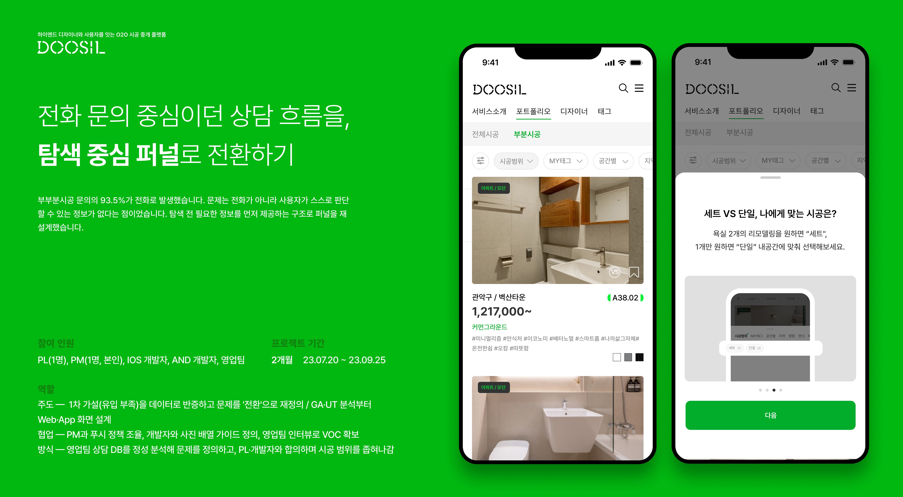
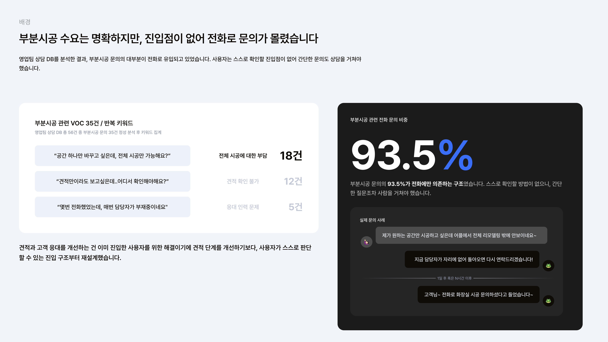
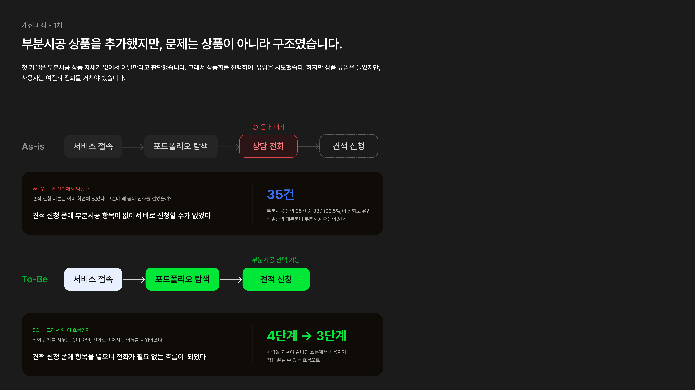
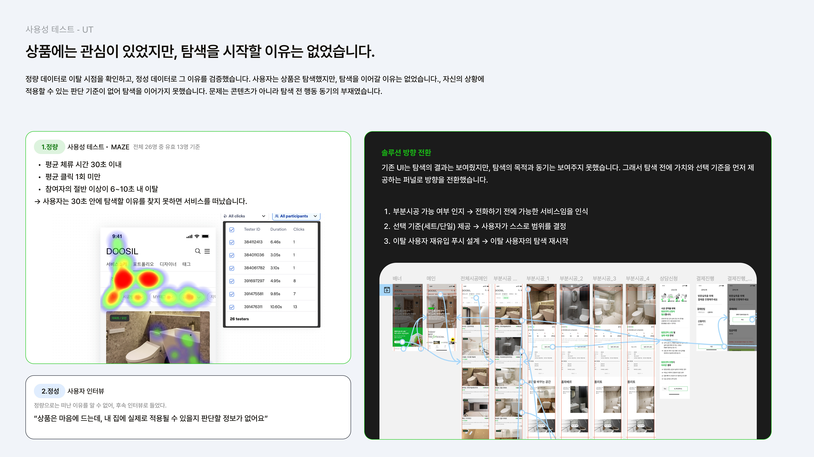
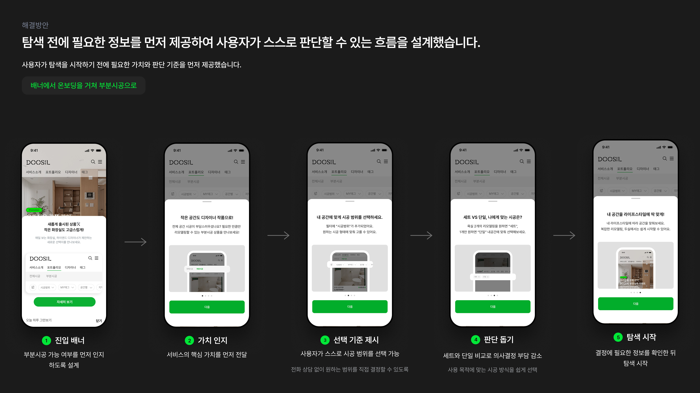
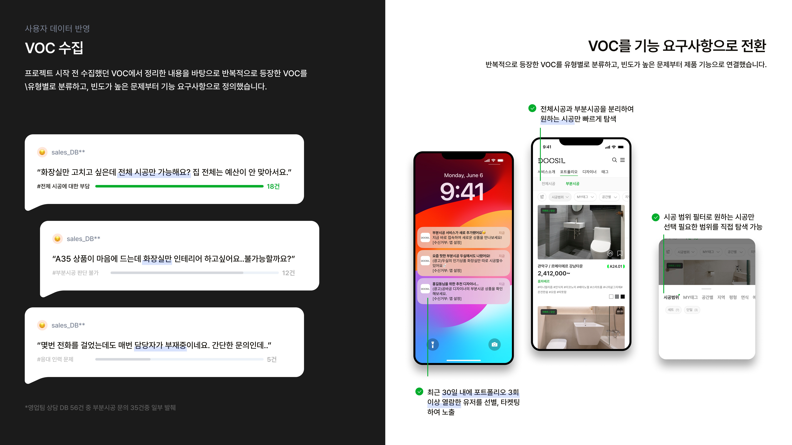
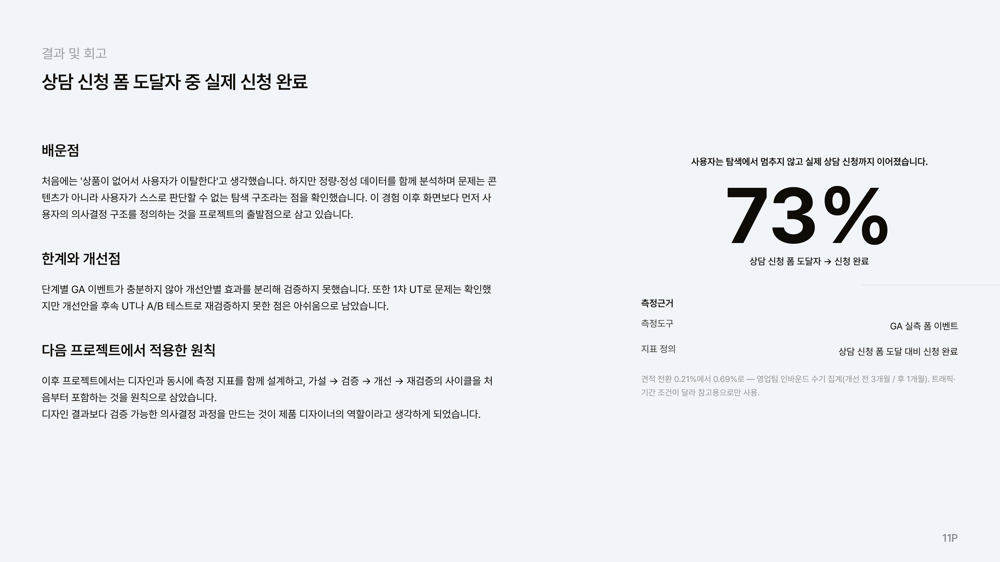

전화 문의 중심이던 상담 흐름을,
탐색 중심 퍼널로 전환하기
DOOSIL은 하이엔드 디자이너와 사용자를 잇는 O2O 시공 중개 플랫폼입니다. 부분시공 문의의 93.5%가 전화로 발생하고 있었고, 문제는 전화 자체가 아니라 사용자가 스스로 판단할 수 있는 정보가 없다는 점이었습니다. 탐색 전 필요한 정보를 먼저 제공하는 구조로 퍼널을 재설계했습니다.

부분시공 수요는 명확하지만,
진입점이 없어 전화로 문의가 몰렸습니다
영업팀 상담 DB를 분석한 결과, 부분시공 문의의 대부분이 전화로 유입되고 있었습니다. 사용자는 스스로 확인할 진입점이 없어 간단한 문의도 상담을 거쳐야 했습니다.
상담 DB 총 56건 중 부분시공 문의 35건을 정성 분석한 결과, 반복적으로 등장한 키워드는 전체 시공에 대한 부담(18건), 견적 확인 불가(12건), 응대 인력 문제(5건)였습니다. 부분시공 문의의 93.5%가 전화에만 의존하는 구조였고, 스스로 확인할 방법이 없으니 간단한 질문조차 사람을 거쳐야 했습니다.
견적과 고객 응대를 개선하는 건 이미 진입한 사용자를 위한 해결이기에, 견적 단계를 개선하기보다 사용자가 스스로 판단할 수 있는 진입 구조부터 재설계했습니다.

부분시공 상품을 추가했지만,
문제는 상품이 아니라 구조였습니다
첫 가설은 부분시공 상품 자체가 없어서 이탈한다고 판단했습니다. 그래서 상품화를 진행하여 유입을 시도했습니다. 하지만 상품 유입은 늘었지만, 사용자는 여전히 전화를 거쳐야 했습니다.
WHY — 왜 전화에서 멈췄나
견적 신청 버튼은 이미 화면에 있었습니다. 그런데 왜 굳이 전화를 걸었을까?
견적 신청 폼에 부분시공 항목이 없어서 바로 신청할 수 없었다는 것이 원인이었습니다.
부분시공 문의 35건 중 33건(93.5%)이 전화로 유입 — 멈춤의 대부분이 부분시공 때문이었습니다.
SO — 그래서 왜 이 흐름인지
전화 단계를 지우는 것이 아닌, 전화로 이어지는 이유를 지워야 했습니다.
견적 신청 폼에 항목을 넣으니 전화가 필요 없는 흐름이 되었고,
사람을 거쳐야 끝나던 흐름에서 4단계 → 3단계로,
사용자가 직접 끝낼 수 있는 흐름으로 바뀌었습니다.

상품에는 관심이 있었지만,
탐색을 시작할 이유는 없었습니다
정량 데이터로 이탈 시점을 확인하고, 정성 데이터로 그 이유를 검증했습니다. 사용자는 상품은 탐색했지만, 탐색을 이어갈 이유는 없었습니다. 자신의 상황에 적용할 수 있는 판단 기준이 없어 탐색을 이어가지 못했습니다. 문제는 콘텐츠가 아니라 탐색 전 행동 동기의 부재였습니다.
정량 (MAZE, 유효 참여자 13명): 평균 체류 시간 30초 이내, 평균 클릭 1회 미만, 참여자의 절반 이상이 6~10초 내 이탈. 사용자는 30초 안에 탐색할 이유를 찾지 못하면 서비스를 떠났습니다.
정성 (사용자 인터뷰): "상품은 마음에 드는데, 내 집에 실제로 적용될 수 있을지 판단할 정보가 없어요"
솔루션 방향 전환 — 기존 UI는 탐색의 결과는 보여줬지만, 탐색의 목적과 동기는 보여주지 못했습니다. 그래서 탐색 전에 가치와 선택 기준을 먼저 제공하는 퍼널로 방향을 전환했습니다.

탐색 전에 필요한 정보를 먼저 제공하여,
사용자가 스스로 판단할 수 있는 흐름을 설계했습니다
사용자가 탐색을 시작하기 전에 필요한 가치와 판단 기준을 먼저 제공했습니다. 배너에서 온보딩을 거쳐 부분시공으로 이어지는 5단계 흐름으로 재설계했습니다.
1. 진입 배너 — 부분시공 가능 여부를 먼저 인지하도록 설계
2. 가치 인지 — 서비스의 핵심 가치를 먼저 전달
3. 선택 기준 제시 — 사용자가 스스로 시공 범위를 선택 가능 (전화 상담 없이 원하는 범위를 직접 결정)
4. 판단 돕기 — 세트와 단일 비교로 의사결정 부담 감소 (사용 목적에 맞는 시공 방식을 쉽게 선택)
5. 탐색 시작 — 결정에 필요한 정보를 확인한 뒤 탐색 시작

VOC를 기능 요구사항으로 전환했습니다
프로젝트 시작 전 수집했던 VOC에서 정리한 내용을 바탕으로 반복적으로 등장한 VOC를 유형별로 분류하고, 빈도가 높은 문제부터 기능 요구사항으로 정의했습니다.
대표 VOC:
· "화장실만 고치고 싶은데 전체 시공만 가능해요? 집 전체는 예산이 안 맞아서요." (전체 시공에 대한 부담 · 18건)
· "A35 상품이 마음에 드는데 화장실만 인테리어 하고싶어요..불가능할까요?" (부분시공 판단 불가 · 12건)
· "몇번 전화를 걸었는데도 매번 담당자가 부재중이네요. 간단한 문의인데.." (응대 인력 문제 · 5건)
VOC → 기능 전환:
· 전체시공과 부분시공을 분리하여 원하는 시공만 빠르게 탐색
· 시공 범위 필터로 원하는 시공만 선택, 필요한 범위를 직접 탐색 가능
· 최근 30일 내에 포트폴리오 3회 이상 열람한 유저를 선별, 타겟팅하여 재유입 푸시 노출

사용자는 탐색에서 멈추지 않고,
실제 상담 신청까지 이어졌습니다
상담 신청 폼 도달자 중 73%가 실제 신청 완료로 이어졌습니다. (측정: GA 실측 폼 이벤트 — 상담 신청 폼 도달 대비 신청 완료)
배운 점 — 처음에는 '상품이 없어서 사용자가 이탈한다'고 생각했습니다. 하지만 정량·정성 데이터를 함께 분석하며 문제는 콘텐츠가 아니라 사용자가 스스로 판단할 수 없는 탐색 구조라는 점을 확인했습니다. 이 경험 이후 화면보다 먼저 사용자의 의사결정 구조를 정의하는 것을 프로젝트의 출발점으로 삼고 있습니다.
한계와 개선점 — 단계별 GA 이벤트가 충분하지 않아 개선안별 효과를 분리해 검증하지 못했습니다. 또한 1차 UT로 문제는 확인했지만 개선안을 후속 UT나 A/B 테스트로 재검증하지 못한 점은 아쉬움으로 남았습니다.
다음 프로젝트에서 적용한 원칙 — 이후 프로젝트에서는 디자인과 동시에 측정 지표를 함께 설계하고, 가설 → 검증 → 개선 → 재검증의 사이클을 처음부터 포함하는 것을 원칙으로 삼았습니다. 디자인 결과보다 검증 가능한 의사결정 과정을 만드는 것이 제품 디자이너의 역할이라고 생각하게 되었습니다.
* 견적 전환 0.21% → 0.69% (영업팀 인바운드 수기 집계, 개선 전 3개월 / 후 1개월). 트래픽·기간 조건이 달라 참고용으로만 사용.
- Product Designer
- Eukee Kang (본인)
- PL
- 1명
- iOS Developer
- 1명
- Android Developer
- 1명
- Sales Team
- VOC 인터뷰 협업